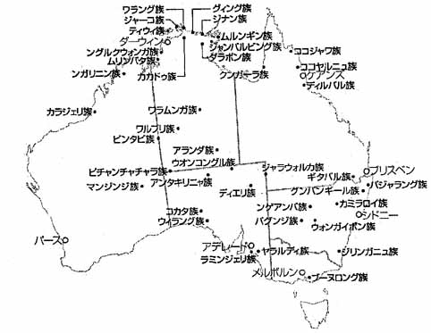
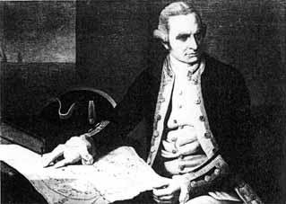
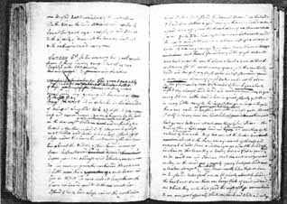

|
第一章 アボリジニーと神秘的な世界  図３：アボリジニーの部族の分布 アボリジニーは肌も髪も黒く、髪は短くカールしている。アボリジニーは インディアンやエスキモーに見られるような民族衣装と呼ばれるものはない。 彼らはおよそ衣服といったものを身につけていなく、腰の辺りにガードルの ような木の皮をつけたり、わずかに長めの草や三,四本の大枝をガードルの下 に突っ込んで裸体を隠していた。定着をしない狩猟採集民のアボリジニーに は持ち歩く財産は少なければ少ないほどよい。また暖かく素晴らしい気候の 中に住んでいるおかげで衣服の必要性は大してなかったのだろう。 アボリジニーがまだ白人の侵食を受ける前、初めて白人がオーストラリアの 土地に上陸した当時のアボリジニーのこうした生活の様子は、オーストラリア にやってきた海賊ウイリアム･ダンピアー（William Dampier）とジェイムス・ クック（James Cook）の記述によって知ることが出来る。ウイリアム･ダンピ アーはオーストラリアのシャークス湾に1688年と1699年にやってきた。彼はア ボリジニーを「ニューホランド（当時オーストラリアはこう呼ばれていた）の 貧しく眼をパチパチさせている人たち」（The Poor Winking People of New Holland）と呼んだ。またジェームス・クックはアボリジニーについて次のよ うに語っている。 「ニューホランドの原住民は、地上で一番惨めな人々である。しかし現実に は、彼らは我々ヨーロッパ人よりも遥かに幸福だ。必要以上の情報を得るわけ でもなく、またヨーロッパで追求されすぎる便利さというものに惑わされるこ ともない。彼らは静寂の中に暮らしている。不平等さに邪魔されることもない。 地上と海との調和の中に生きているのだ。彼らは生きるために必要なものをす べて持っている。むやみに望んだりしない、壮麗な家も家財道具もである。」 ヨーロッパ人にとって「文明」とは衣服、武器、定住式家屋等の物質の所有 によってはかられていた。アボリジニーには古代文明の豊かさの尺度としての、 遺跡、寺院、都市などの建築物がなかった。そのうえ、先にも述べたようにア ボリジニーが衣服に必要性を感じず裸でいたことがヨーロッパ人はアボリジニ ーの豊かさを取り違え、クックがアボリジニーを「惨めな人々」と書いたこと につながるのだろう。 このように古代のアボリジニーは自然に調和し、自然の中で天候や大地の知 識を利用し生きていたことがわかる。  図４：ジェームス・クック  図５：クックが残した航海日誌 |